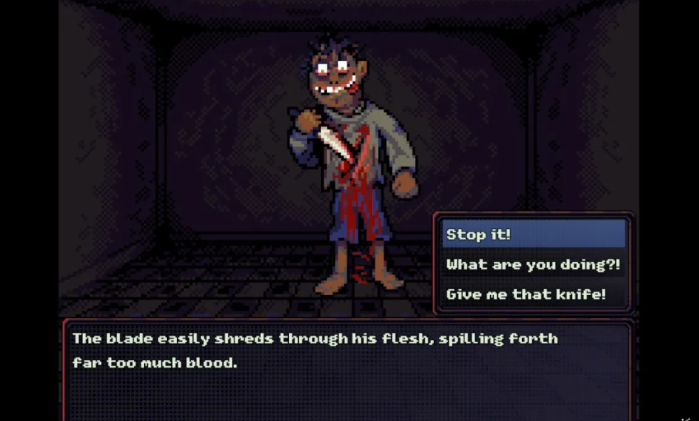
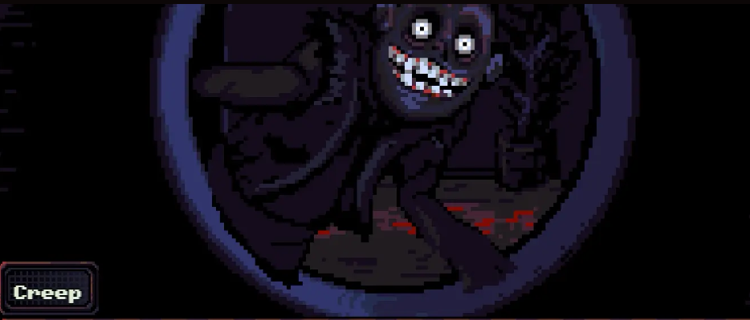

LOOK OUTSIDE ISN'T JUST A GAME—IT'S A MEDITATION ON HUMAN CONNECTION IN THE DIGITAL AGE. DEVELOPED BY SOLITARY STUDIOS, THIS EXPERIMENTAL TITLE TURNS THE SIMPLE ACT OF WINDOW-GAZING INTO A PROFOUND EXPLORATION OF EMPATHY AND CURIOSITY.
OBSERVING DAILY LIFE THROUGH THE WINDOW - THE CORE GAMEPLAY OF LOOK OUTSIDE
SET DURING THE 2020 PANDEMIC LOCKDOWN, YOU ASSUME THE ROLE OF A PERSON ISOLATED IN A SMALL APARTMENT. WITH NO EXPLICIT OBJECTIVES OR TRADITIONAL GAMEPLAY MECHANICS, LOOK OUTSIDE CHALLENGES PLAYERS TO FIND MEANING IN THE ORDINARY LIVES UNFOLDING BEYOND THEIR WINDOW.
THE GENIUS OF LOOK OUTSIDE LIES IN ITS MINIMALIST DESIGN. THE UI IS COMPLETELY ABSENT—NO HEALTH BARS, NO MAPS, NO QUEST MARKERS. INSTEAD, THE GAME RELIES ON SUBTLE VISUAL AND AUDITORY CUES TO GUIDE YOUR ATTENTION. THE ONLY INTERACTION IS A ZOOM MECHANIC THAT PHYSICALLY MANIFESTS THE ACT OF LEANING CLOSER TO THE WINDOW.
WHAT MAKES THIS GAME TRULY REVOLUTIONARY IS ITS PROCEDURAL NARRATIVE ENGINE. EACH CHARACTER IN THE APARTMENT COMPLEX ACROSS THE STREET HAS THEIR OWN COMPLEX SCHEDULE, RELATIONSHIPS, AND EMERGING STORYLINES. THE GAME TRACKS YOUR OBSERVATION PATTERNS AND ADJUSTS THE NARRATIVES ACCORDINGLY—IF YOU KEEP WATCHING THE ELDERLY WOMAN ON THE THIRD FLOOR, HER STORY BECOMES MORE DEVELOPED AND NUANCED.
CHARACTER STORIES UNFOLD THROUGH CAREFUL OBSERVATION
THE AUDIO DESIGN IS A MASTERCLASS IN ATMOSPHERIC STORYTELLING. THE GAME USES BINAURAL AUDIO TO CREATE A 3D SOUNDSCAPE THAT CHANGES AS YOU MOVE BETWEEN WINDOWS. DISTANT CONVERSATIONS BECOME CLEARER WHEN YOU FOCUS, WHILE RAIN ON THE WINDOWPANES RESPONDS TO YOUR VIEWING ANGLE. THESE DETAILS CREATE AN UNPARALLELED SENSE OF PRESENCE.
KEY OBSERVATIONS
INNOVATIVE UX
Complete absence of traditional UI creates unparalleled immersion. Players learn through observation rather than tutorials.
DYNAMIC NARRATIVE
Procedural storytelling adapts to player attention, making each playthrough uniquely personal.
EMOTIONAL IMPACT
Creates profound empathy for virtual characters through subtle environmental storytelling.
LOOK OUTSIDE'S GREATEST ACHIEVEMENT IS HOW IT SUBVERTS EXPECTATIONS OF WHAT GAMES CAN BE. WITHOUT A SINGLE LINE OF DIALOGUE OR EXPLICIT NARRATIVE, IT MANAGES TO CONVEY COMPLEX HUMAN STORIES THROUGH PURE OBSERVATION. THE GAME'S FINAL REVELATION—THAT YOU'VE BEEN OBSERVING A WORLD THAT'S BEEN OBSERVING YOU BACK—IS A STROKE OF NARRATIVE GENIUS THAT REWARDS PATIENT PLAYERS WITH A GENUINELY MOVING CONCLUSION.
WHILE NOT FOR EVERYONE (ITS DELIBERATE PACE WILL TEST SOME PLAYERS' PATIENCE), LOOK OUTSIDE STANDS AS A BOLD EXPERIMENT IN INTERACTIVE STORYTELLING. IT PROVES THAT SOMETIMES THE MOST POWERFUL STORIES AREN'T TOLD—THEY'RE OBSERVED.